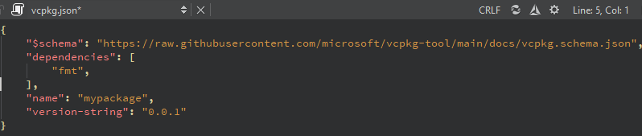
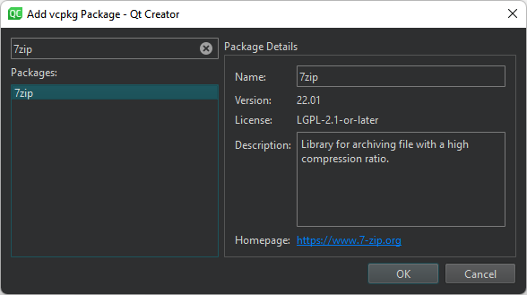
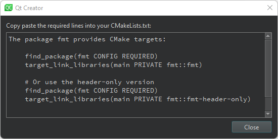

Edit vcpkg manifest files
When you open a vcpkg.json file, it opens in the manifest file editor:

Add packages to manage
To add a package to your project:
- Select the (Add vcpkg Package) button on the manifest editor toolbar.

- Select the package to add to your project.
- Select OK to return to the editor.
- Repeat to add more packages.
Generate code for CMake configuration files
To generate sample CMake code to copy to the CMakeLists.text file:
- Select the (CMake Code) button on the manifest editor toolbar.

- Select the example code you need and copy-paste it to the CMakeLists.txt file.
Set the path to vcpkg
To set the path to the directory where you installed vcpkg, select  (Configure) on the editor toolbar.
(Configure) on the editor toolbar.
See also vcpkg Package Manager and Create vcpkg manifest files.